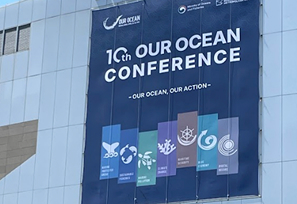
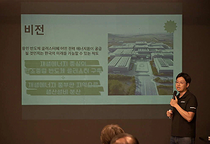
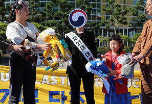
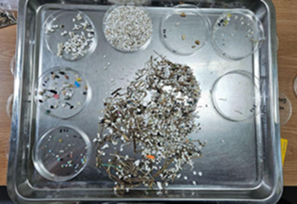

지금 함께
바다를 지켜주세요
파괴적인 어업에 대항하고, 플라스틱 오염과
기후위기를 막기 위한 캠페인을 펼치며 바다를 보호하기 위해 활동하고 있습니다
그린피스 뉴스룸
환경을 위한 보도,
환경을 위한 보도,
지구의 내일과 연결됩니다
-
해양 
[성명서] UNOC3 폐막 “글로벌 해양조약, 발효 카운트다운”
제3차 유엔 해양총회(UNOC3)가 지난 13일(프랑스 현지 시간) 막을 내렸다. 이번 해양총회의 가장 큰 성과는 ‘글로벌 해양조약’ (해양법에 관한 국제연합협약에 따른 국가관할권 이원지역의 해양생물다양성 보전 및 지속가능한 이용에 대한 협정 ∙BBNJ) 비준에 속도를 냈다는 점이다.
2025.06.16 그린피스 -
기후 
[보도] 용인 반도체 국가산단 LNG 6기 발전 허가… ‘기후 목표·주민 건강·법적 정당성 모두 외면
국제환경단체 그린피스는 경기환경운동연합·용인 반도체국가산단 재검토 요구 모임과 함께 ‘용인 반도체 국가산단 LNG 발전소 건설 저지 캠페인 설명회’를 진행했다.
2025.06.16 그린피스 -
플라스틱 
[보도] 해녀와 어민 등 제주도민 "거대한 쓰레기장 된 제주바다"
6월 5일 환경의날을 맞아 플뿌리연대가 제주도민들과 함께 새 정부에 오염된 해양생물인형을 건네며 플라스틱 생산 감축을 촉구하는 퍼포먼스를 진행하고 있다.
2025.06.12 그린피스 -
플라스틱 
[보도] 제주 김녕 해변, 미세플라스틱 얼마나 있을까
6월 4일, 국내⋅외 16개 시민단체로 구성된 플뿌리연대(‘플’라스틱 문제를 ‘뿌리’뽑는 ‘연대’) 주최로 ｢새로운 시작, 플라스틱 생산 감축으로｣ 포럼이 진행됐다.
2025.06.12 그린피스